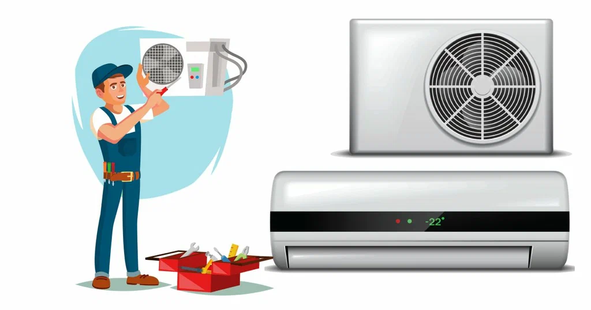

صيانة مكيفات شمال الرياض: دليلك الشامل لاختيار أفضل خدمات تبريد وصيانة المكيفات

مع حلول فصل الصيف وارتفاع درجات الحرارة في مدينة الرياض، يصبح وجود مكيف يعمل بكفاءة عالية أمرًا ضرورياً لا يمكن الاستغناء عنه. ولكن كما هو الحال مع أي جهاز كهربائي، فإن المكيفات تحتاج إلى صيانة دورية لضمان عملها بكفاءة وعدم تعرضها للأعطال المفاجئة. وهنا تبرز أهمية صيانة مكيفات شمال الرياض باستمرار ، يتوفر عدد كبير من الشركات والفنيين المحترفين المتخصصين في هذا المجال مثل شركة نقل الرياض للمكيفات والنقل. إذا كنت تبحث عن شركة صيانة مكيفات شمال الرياض موثوقة وآمنة فإن شركة نقل لرياض توفر لك خدمات احترافية بأسعار منافسة. تواصل معنا الأن من خلال الواتساب بالضغط هنا أو من خلال زيارة موقعنا بالضغط هنا .
لماذا تعتبر صيانة مكيفات شمال الرياض مهمة؟
شمال الرياض يُعد من أكثر المناطق السكنية والتجارية نموًا في العاصمة السعودية، ويضم أحياء راقية مثل الصحافة، النرجس، الياسمين، والعارض. هذه المناطق تتميز بكثافة سكانية عالية واستخدام يومي مكثف لأجهزة التكييف، ما يجعل من الصيانة الدورية ضرورة حقيقية.
أهم الأسباب التي تجعل الصيانة ضرورية:
- الحفاظ على كفاءة التبريد
تراكم الغبار والأوساخ داخل وحدات المكيف يقلل من كفاءته في التبريد، مما يجعله يستهلك طاقة أكبر لتقديم نفس الأداء، ويؤدي إلى ضعف في تدفق الهواء وتأثير مباشر على راحة المستخدمين. - تقليل استهلاك الكهرباء
عندما يكون المكيف نظيفًا وخاليًا من الأتربة، فإنه يعمل بكفاءة أكبر ويستهلك طاقة أقل بنسبة قد تصل إلى 30%، مما ينعكس بشكل واضح على فاتورة الكهرباء الشهرية. - تجنب الأعطال المفاجئة
الصيانة الدورية تساعد على الكشف المبكر عن المشكلات الفنية البسيطة، مثل تسريبات الفريون أو ضعف المحرك، قبل أن تتحول إلى أعطال كبيرة ومكلفة يصعب معالجتها لاحقًا. - إطالة عمر المكيف
الاهتمام بتنظيف المكيف وتزييت أجزائه المتحركة وفحص مكوناته بشكل منتظم يساهم في الحفاظ عليه بحالة ممتازة لسنوات طويلة، وقد يستمر الجهاز في العمل بكفاءة لأكثر من 10 سنوات. - تحسين جودة الهواء الداخلي
الفلاتر المتسخة قد تنقل الغبار والروائح الكريهة والبكتيريا إلى هواء المنزل، بينما يضمن تنظيف الفلاتر والتأكد من نظافة الملفات تدفق هواء نقي وصحي، خاصة في المنازل التي يوجد بها أطفال أو مرضى ربو أو كبار سن. - تقليل التكاليف على المدى الطويل
بدلاً من انتظار حدوث عطل مفاجئ قد يتطلب تكلفة إصلاح أو حتى استبدال جهاز بالكامل، تساعدك الصيانة الوقائية المنتظمة على تقليل النفقات غير المتوقعة والمحافظة على استثماراتك في الأجهزة.
إقرأ ايضا: دليلك الشامل لفك وتركيب المكيفات بالرياض
أنواع خدمات صيانة المكيفات شمال الرياض
تتنوع خدمات صيانة مكيفات شمال الرياض حسب نوع الجهاز ومكان استخدامه. وفيما يلي نظرة على أبرز أنواع الصيانة:
1. صيانة المكيفات المنزلية
تشمل تنظيف الفلاتر، فحص الغاز، التأكد من عمل الضاغط، ومعالجة التسريبات. هذه الخدمة غالبًا ما تكون موسمية، وتُنصح بها مرتين سنويًا على الأقل للحفاظ على كفاءة المكيف
2. صيانة مكيفات الشقق السكنية والفيلات
تركز هذه الخدمة على أنظمة التكييف المركزية والمكيفات المخفية، وهي تتطلب خبرة كبيرة من الفنيين نظرًا لتعقيد النظام.توقر شركة نقل الرياض فنيين متخصصين في كافة أنواع المكيفات.
3. صيانة مكيفات الشركات والمكاتب
المكيفات في الشركات تعمل لساعات طويلة، ما يجعلها أكثر عرضة للأعطال. يتم في هذه الخدمة التركيز على الصيانة الوقائية لتجنب توقف المكيفات أثناء أوقات العمل والحفاظ على كفاءتها.
4. صيانة مكيفات المحلات التجارية
تشمل فحص أداء المكيف ومدى توافقه مع متطلبات تبريد المحل، مع توفير تقارير فنية دورية لضمان استمرارية التشغيل.
إقرأ ايضا: دليلك الشامل لنقل الزجاج
أبرز الأعطال الشائعة في المكيفات وكيفية التعامل معها
تتعرض أجهزة التكييف للعديد من الأعطال بسبب كثرة الاستخدام والظروف البيئية، ومن المهم معرفة هذه الأعطال الشائعة وكيفية التعامل معها للحفاظ على أداء المكيف وضمان استمراريته في العمل بكفاءة. إليك أبرز هذه الأعطال:
- ضعف التبريد أو توقفه تمامًا
يعتبر ضعف التبريد من أكثر المشاكل شيوعًا، وقد يحدث بسبب نقص في كمية غاز الفريون، أو انسداد في الفلاتر أو الملفات الداخلية بسبب الأتربة. للتعامل مع هذه المشكلة، يجب إجراء فحص شامل للشوائب وتنظيف الفلاتر، وفحص ضغط الغاز وإعادة تعبئته إذا لزم الأمر. في بعض الحالات قد يحتاج الجهاز إلى صيانة تقنية متقدمة من قبل فني متخصص. - تسرب المياه من الوحدة الداخلية
يحدث تسرب المياه عادة نتيجة انسداد مجرى التصريف بسبب الأتربة أو تراكم الطحالب، أو نتيجة وجود تلف في خزان المياه أو مشكلة في تركيب الوحدة. من الضروري تنظيف مجرى التصريف بانتظام وفحص الخراطيم، والتأكد من تركيب الوحدة بشكل صحيح لتجنب هذا العطل. - صدور أصوات مزعجة من المكيف
الأصوات الغريبة مثل الطرق أو الطقطقة قد تكون ناتجة عن ترهل أو ارتخاء بعض الأجزاء الداخلية مثل المروحة أو المحرك، أو وجود أجسام غريبة داخل الوحدة. يتطلب هذا الفحص الدقيق وإحكام تثبيت الأجزاء أو استبدال القطع التالفة لتجنب تفاقم المشكلة. - توقف المكيف عن العمل فجأة
قد يكون سبب توقف المكيف هو مشاكل في النظام الكهربائي مثل انقطاع التيار، أو تلف في الفيوزات أو اللوحة الكهربائية. يجب التحقق من مصدر الكهرباء وفحص المفاتيح الكهربائية أو استدعاء فني مختص لفحص النظام الكهربائي وتصليحه. - ارتفاع استهلاك الكهرباء
إذا لاحظت زيادة غير طبيعية في فاتورة الكهرباء، قد يكون السبب وجود خلل في أجزاء المكيف مثل الكمبروسر أو تراكم الأتربة في الفلاتر، مما يجعل الجهاز يعمل بجهد أكبر. الصيانة الدورية وتنظيف الفلاتر وتحقق فني من مكونات الجهاز تساعد على حل هذه المشكلة. - ظهور روائح كريهة عند تشغيل المكيف
تنجم الروائح الكريهة غالبًا عن تراكم العفن أو البكتيريا داخل الفلاتر أو مجاري الهواء. الحل يكمن في تنظيف الفلاتر بانتظام، واستخدام مواد معقمة في صيانة الجهاز، بالإضافة إلى تهوية المكان بشكل دوري.
إقرأ ايضا : شركة تنظيف مكيفات بالرياض
أنواع المكيفات الأكثر شيوعًا في شمال الرياض وكيفية صيانتها
1. المكيف الشباك
- الصيانة: تنظيف الفلاتر، التحقق من حالة الكمبروسر، تعبئة غاز الفريون إن لزم.
- الأعطال الشائعة: صوت عالي وضعف التبريد.
2. المكيف السبليت
- الصيانة: تنظيف الوحدة الداخلية والخارجية، فحص خطوط التبريد، إعادة ضبط الريموت.
- الأعطال الشائعة: تسرب ماء، تجمد الوحدة، تسريب غاز.
3. المكيف المركزي
- الصيانة: يتم عبر فرق فنية متخصصة وتشمل تنظيف الدكتات، فحص التوصيلات، ضبط الترموستات.
- الأعطال الشائعة: ضعف التبريد في بعض الغرف، توقف المروحة الرئيسية.
إقرأ ايضا: دليلك الشامل لطلب سياره نص نقل لنقل العفش بالرياض
متى تحتاج إلى صيانة مكيفك؟
الخبراء ينصحون بإجراء صيانة مكيفات شمال الرياض مرتين سنويًا: الأولى قبل بداية الصيف، والثانية بعد نهايته. هذا الجدول يضمن الحفاظ على المكيف بحالة ممتازة طوال السنة.
كيف تختار فني صيانة مكيفات محترف؟
الاختيار الصحيح لفني أو شركة صيانة مكيفات شمال الرياض يمكن أن يحدث فرقًا كبيرًا. ابحث عن شركات ذات سمعة طيبة، لديها تقييمات جيدة، وتقدم ضمانًا على خدماتها مثل شركة نقل الرياض . لا تتردد في سؤال الفني عن خبرته، نوع المعدات التي يستخدمها، وهل يوفر قطع غيار أصلية.
كيف تختار أفضل شركة صيانة مكيفات شمال الرياض؟
في ظل كثرة الخيارات، من المهم معرفة المعايير التي يجب أن تبحث عنها عند اختيار شركة لصيانة مكيفك:
1. السمعة والتقييمات
تحقق من تقييمات العملاء السابقين على الإنترنت، واطلع على تجاربهم مع الشركة.
2. الخبرة والكفاءة
اختر شركة لديها سنوات من الخبرة وفنيين مدربين و مرخصين.
3. الضمان
اسأل إن كانت الخدمة تأتي مع ضمان على القطع أو العمل الفني.
4. سرعة الاستجابة
في الأوقات الحرجة، تحتاج إلى فني يصل إليك بسرعة ويحل المشكلة بأقل وقت ممكن.
5. الأسعار الشفافة
تأكد من وضوح الأسعار وعدم وجود تكاليف مخفية.
أسعار صيانة مكيفات شمال الرياض
الأسعار تختلف حسب نوع المكيف، نوع العطل، ومساحة التغطية. لكن بوجه عام، تتراوح تكلفة صيانة مكيفات شمال الرياض للمكيفات المنزلية بين 150 إلى 300 ريال، بينما قد تصل لصيانة المكيفات المركزية إلى 800 ريال أو أكثر.
نصائح للحفاظ على مكيفك بين مواعيد الصيانة
- نظف الفلاتر كل أسبوعين.
- افحص الوحدة الخارجية وتأكد من عدم وجود معوقات.
- لا تضبط درجة الحرارة على مستويات منخفضة جدًا.
- راقب أي تغير في صوت أو أداء المكيف.
حتى لو لم تكن خبيرًا، فإن اتباع هذه الإرشادات سيساعدك على تأخير الحاجة إلى صيانة مكيفات شمال الرياض الطارئة.
أهمية الصيانة للمؤسسات والشركات
لا تقتصر أهمية صيانة مكيفات شمال الرياض على المنازل فقط، بل تمتد إلى الشركات والمؤسسات، حيث تؤثر الأعطال بشكل مباشر على إنتاجية الموظفين ورضا العملاء. لذا فإن الاعتماد على عقود صيانة دورية للمؤسسات يُعد قرارًا استراتيجيًا.
أفضل أوقات صيانة مكيفات شمال الرياض
على الرغم من أن الصيف هو موسم تشغيل المكيفات بكثافة، فإن أفضل وقت لصيانة المكيف هو قبل قدوم الصيف أو بعد انتهائه. بذلك تضمن جهوزية المكيف دون الحاجة للانتظار في موسم الذروة.
أهمية الشركات المحلية في صيانة مكيفات شمال الرياض
الاعتماد على شركة محلية مثل شركة نقل الرياض يوفر العديد من المزايا:
- سرعة الوصول للموقع.
- دراية بطبيعة المناخ المحلي.
- توفر قطع الغيار الخاصة بالعلامات التجارية المنتشرة في المنطقة.
متى يكون التكييف بحاجة عاجلة للصيانة؟
من أبرز المؤشرات التي تشير لحاجة جهازك إلى صيانة مكيفات شمال الرياض فورية:
- ضعف مفاجئ في التبريد.
- صوت غير طبيعي أو اهتزاز.
- صدور رائحة غير معتادة.
- زيادة استهلاك الكهرباء.
- تسرب مياه من المكيف الداخلي.
عند ملاحظتك لأحد هذه الأعراض، لا تتردد في التواصل مع أقرب مركز صيانة مكيفات شمال الرياض لتجنب تفاقم المشكلة.
لماذا تحتاج إلى صيانة دورية لمكيفاتك؟
الصيانة الدورية للمكيفات ليست مجرد إجراء احتياطي، بل هي أحد أهم العوامل التي تضمن استمرار عمل الجهاز بكفاءة عالية وتوفر عليك الكثير من المال والجهد على المدى الطويل. فمع الاستخدام المتواصل للمكيف، خاصة في المناطق الحارة مثل شمال الرياض، تتراكم الأتربة والغبار داخل الفلاتر والمراوح والملفات، مما يؤدي إلى ضعف تدفق الهواء، وزيادة استهلاك الكهرباء، وانخفاض قدرة التبريد بشكل ملحوظ. كما أن إهمال الصيانة يؤدي إلى إجهاد مكونات المكيف الداخلية، مثل الكمبروسر والمكثف، الأمر الذي قد يتسبب في أعطال مفاجئة أو حتى توقف تام عن العمل، وغالبًا ما تكون تكلفة الإصلاح في هذه الحالة مرتفعة.من خلال الصيانة المنتظمة، يمكن اكتشاف المشكلات البسيطة قبل أن تتحول إلى أعطال كبيرة. على سبيل المثال، قد يكون هناك تسريب بسيط في غاز التبريد لا يُلاحظ في البداية، لكنه مع الوقت يقلل من كفاءة التبريد ويضغط على المحرك حتى يتلف. كذلك، فإن تنظيف الفلاتر بانتظام يمنع تراكم البكتيريا والعفن، ما يحسن جودة الهواء داخل المكان ويحمي أفراد الأسرة من أمراض الجهاز التنفسي والحساسية، خاصة في البيوت التي تضم أطفالًا أو كبار سن.أيضًا، الصيانة الدورية تساعد على تقليل استهلاك الطاقة بنسبة قد تصل إلى 20%، مما يعني انخفاضًا واضحًا في فواتير الكهرباء، وهو أمر بالغ الأهمية في ظل ارتفاع تكاليف المعيشة. ببساطة، الاستثمار في الصيانة المنتظمة لمكيفاتك هو استثمار ذكي في راحة منزلك وصحة أفراد أسرتك، ويضمن لك أداءً ثابتًا وموثوقًا طوال أشهر الصيف الحارة.
خدمات شركة صيانة مكيفات شمال الرياض
تقدم شركة صيانة مكيفات شمال الرياض مجموعة متكاملة من الخدمات التي تلبي احتياجات العملاء السكنية والتجارية بكفاءة عالية واحترافية، وتشمل:
- فحص وتشخيص الأعطال بدقة: باستخدام أحدث الأجهزة لتحديد المشكلة من أول زيارة.
- تنظيف شامل للمكيفات: إزالة الأتربة من الفلاتر، والمروحة، والوحدة الداخلية والخارجية لضمان هواء نقي وتبريد أفضل.
- شحن غاز الفريون: باستخدام غاز أصلي ومعتمد لإعادة كفاءة التبريد.
- صيانة المكيفات المركزية والسبليت والشباك: خبرة في التعامل مع جميع الأنواع والماركات.
- استبدال القطع التالفة: توفير قطع غيار أصلية مع ضمان على القطعة والخدمة.
- خدمة الطوارئ 24 ساعة: للرد السريع على البلاغات خاصة خلال فصول الصيف الحارة.
- برامج صيانة دورية: عقود شهرية أو سنوية للمنازل والشركات للحفاظ على كفاءة الأجهزة باستمرار.
- فحص التوصيلات الكهربائية والتأكد من سلامتها: لتجنب الأعطال المفاجئة.
- تقديم تقرير فني شامل بعد كل زيارة: لتوضيح حالة المكيف والتوصيات المستقبلية.
سواء كنت تبحث عن صيانة دورية، إصلاح طارئ، أو تحسين أداء أجهزة التكييف، فإن شركة صيانة مكيفات شمال الرياض تقدم لك الحلول المناسبة بأفضل الأسعار وأعلى درجات الجودة.
لماذا تختار شركة نقل الرياض لصيانة مكيفات شمال الرياض؟
نحن ندرك في شركة نقل الرياض أن كل عميل له احتياجات مختلفة، ولذلك نوفر خدمات صيانة مرنة تناسب الأفراد والعائلات والشركات. يتمتع فريقنا الفني بخبرة طويلة في صيانة جميع أنواع المكيفات، سواء مكيفات الشباك التقليدية أو المكيفات السبليت الحديثة أو حتى أنظمة التكييف المركزي الكبيرة. نستخدم معدات حديثة وتقنيات فحص دقيقة تساعدنا على تحديد الأعطال بشكل سريع وفعال، مما يقلل من وقت الانتظار ويوفر تجربة راحة كاملة لعملائنا.
نعتمد أيضًا على قطع غيار أصلية 100% ونقدم ضمانًا على جميع عمليات الصيانة التي نقوم بها، لأننا نؤمن بأن الجودة والشفافية هما ما يميز خدمة الصيانة المحترفة. نصل إليك في أي منطقة داخل شمال الرياض خلال وقت قياسي، ونحرص على تنفيذ العمل بدقة واحترافية من أول زيارة، لأن رضاك هو غايتنا الأولى.
في شركة نقل الرياض، نحن لا نبيع خدمات، بل نوفّر حلولاً حقيقية وراحة دائمة لعملائنا. هدفنا هو أن تعمل مكيفاتك بأعلى كفاءة طوال الصيف، دون انقطاعات مزعجة أو أعطال مفاجئة. إذا كنت تبحث عن شركة موثوقة تقدم خدمات صيانة مكيفات شمال الرياض باحترافية وجودة عالية، فلا تتردد في التواصل معنا من خلال الواتساب بالضغط هنا.